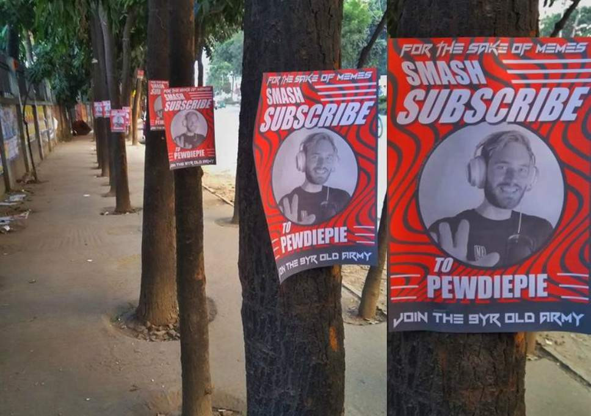

|
|
ទំព័រដើម | អំពី | កំសាន្ត | បច្ចេកទេស | កីឡា | ទំនាក់ទំនង | ||
កាន់តែក្តៅគគុកហើយ T-Series ឡើងលេខ១ វ៉ាយកឈ្នះ PewDiePie ផ្អើល YouTubeChannel ល្បីឈ្មោះ PewDiePie ដែលម្ចាស់មានឈ្មោះពិតថា Felix Kjellberg ទីបំផុតត្រូវរបូតតំណែងជា Channel មាន Subscriber ច្រើនបំផុតសារជាថ្មី បន្ទាប់ពី T-Series របស់ប្រទេសឥណ្ឌាបានយកឈ្នះកាលពីព្រឹកថ្ងៃចន្ទនេះ។ |
T-Series ត្រូវបានស្គាល់ជាក្រុមហ៊ុនចែកចាយមាតិកាតន្ត្រីនិងភាពយន្ត Bollywood ក៏បានតាមយ៉ាងប្រកៀកប្រកិតជាមួយ PewDiePie អស់រយៈពេលច្រើនខែមកហើយ ដោយកន្លងទៅក៏ធ្លាប់យកឈ្នះ Channel កំពូលមួយនេះបានរយៈពេល ៨ នាទីកាលពីថ្ងៃទី ២២ កុម្ភៈ លុះមកដល់ថ្ងៃទី ១៨ មិនាគឺ T-Series បានបំបែកកំណត់ត្រាថ្មីអាចផ្តួលយកឈ្នះច្រើនជាង ២ ម៉ោង។ |
|  |
Channel ទាំងពីរនេះទទួលបាន Subscriber ជិត ៩០ លាននាក់ ដូចគ្នា ប៉ុន្តែតួលេខបច្ចុប្បន្ន T-Series កើនបានច្រើនជាងខ្ទង់ ៥០ ០០០ នាក់។ ជុំវិញការរបូតតំណែងនេះដែរ លោក Felix ក៏បានប្រមែប្រមូលអ្នកគាំទ្រ តាមរយៈការបង្កើតយុទ្ធនាការមួយក្នុងគោលដៅជួយផ្សព្វផ្សាយ Channel របស់ខ្លួន ដែលធ្លាប់ឈរចំណាត់ថ្នាក់កំពូលតាំងពីឆ្នាំ ២០១៣ ឲ្យអាចបន្តជោគជ័យទៅថ្ងៃមុខទៀត។ |
| 2019 at ant training | Made by: Chea Menghuy |